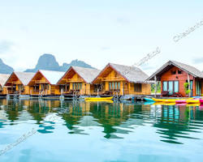
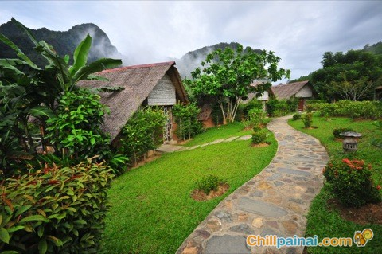

ข้อมูลทั่วไป
- พื้นที่ป่าดิบชื้นขนาดใหญ่ใน จ.สุราษฎร์ธานี
- ทะเลสาบในเขื่อนเชี่ยวหลานเป็นไฮไลต์สำคัญ น้ำสีฟ้า เขาหินปูน
- นิยมกิจกรรมทางน้ำ ดูสัตว์กลางคืน และเดินป่าธรรมชาติ
อยู่ที่ไหน / การเดินทาง
- ที่ตั้ง: อุทยานแห่งชาติเขาสก อำเภอพนม จังหวัดสุราษฎร์ธานี / ทะเลสาบเชี่ยวหลาน (เขื่อนรัชชประภา)
- เครื่องบิน+รถ: ลงสนามบินสุราษฎร์ธานี (URT) → รถต่อไปเขาสก/ท่าเรือเขื่อนรัชชประภา (~60–100 กม.)
- รถบัส: มีรถจากสุราษฎร์ฯ ภูเก็ต กระบี่ ไปตัวอำเภอพนม/ตลาดเขาสก
- ท่าเรือ: ขึ้นเรือที่ท่าเรือเขื่อนรัชชประภาเพื่อล่องทะเลสาบ/ไปที่พักแพ
สิ่งที่น่าสนใจ / ไฮไลต์ / กิจกรรม
- ล่องเรือเข้าทะเลสาบเชี่ยวหลาน ชมผาหินปูน
- พายคายัค / นั่งเรือหางยาว ชมอ่าวเงียบสงบ
- เดินป่า / ดูสัตว์กลางคืน
- เยี่ยมถ้ำ / จุดชมวิวในป่า
- ค้างคืนแบบแพ (floating bungalow)
เวลาเปิด / ค่าเข้าชม / ข้อจำกัด
- การล่องเรือบางเส้นทางผูกกับชั่วโมงเรือ / ฤดูกาล
- บางจุดอาจไม่เปิดในฤดูมรสุม
เคล็ดลับ / คำแนะนำ
- เลือกแผน 2 วัน 1 คืนในเขื่อนเพื่อเก็บบรรยากาศ
- พายเรือเช้า / เย็นเพื่อแสงสวย
- นำไฟฉาย / อุปกรณ์กันแมลง
- จองเรือและแพล่วงหน้า โดยเฉพาะช่วงเทศกาล
ที่พักแนะนำ (ตัวอย่าง)
| ระดับ | ชื่อที่พัก | ราคา/ข้อดี |
|---|---|---|
| พรีเมียม | แพหรูในเขื่อนเชี่ยวหลาน | ~ 6,000–12,000 บาท/คืน — วิวทะเลสาบ เงียบสงบ |
| กลาง |  Our Jungle Camp – Eco Resort Our Jungle Camp – Eco Resort | ~ 2,000–5,000 บาท/คืน — ท่ามกลางธรรมชาติ มีจัดทัวร์ |
| กลาง-ประหยัด | Bungalow/เกสต์เฮาส์ริมเขื่อน | ~ 800–2,500 บาท/คืน — ใกล้น้ำ เดินทางสะดวก |
| โฮมสเตย์ | โรงแรม/แพเล็กริมเขื่อน | ~ 300–1,500 บาท/คืน — ประหยัด ใกล้ธรรมชาติ |
ข้อมูลย่อ
จังหวัด: สุราษฎร์ธานี
ประเภท: ป่าดิบชื้น / ทะเลสาบ / อุทยาน
เหมาะฤดู: ตลอดปี (ฤดูแล้งน้ำใส)
ให้ระบบแนะนำทริป